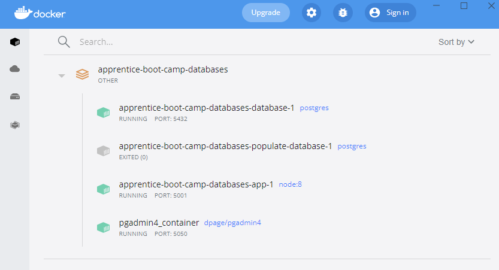
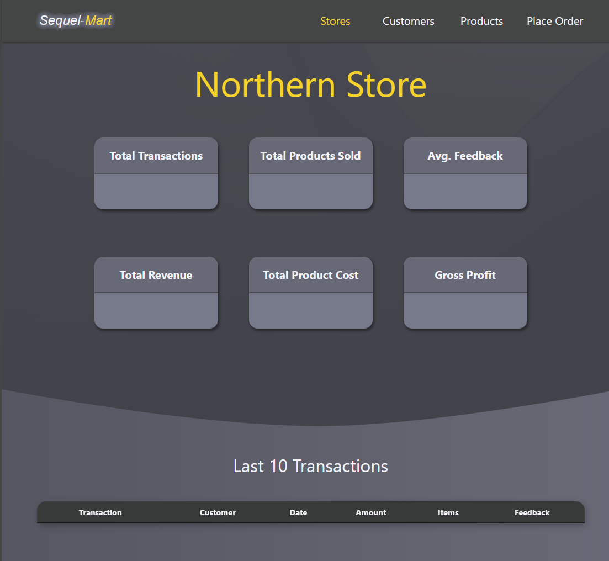
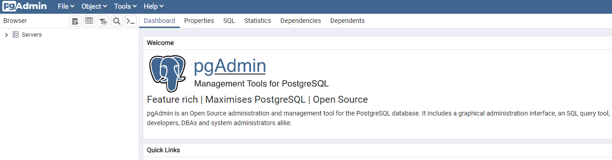
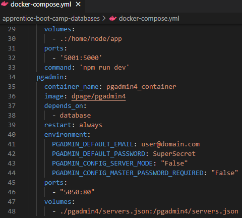
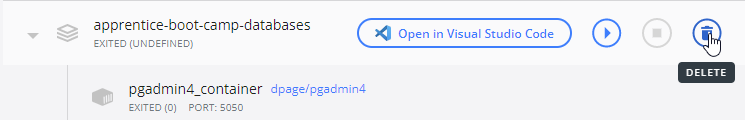

Required Downloads
- Make sure the following has been installed on your computer:
Project Set Up
- Add a folder somewhere on your computer. This will store the project.
- Open this folder as a new project in your code editor.
- Open a terminal window (if using VS Code, the shortcut is
ctrl+').
cd <file path> to the folder you've just created- Run
git clone https://github.com/MCR-Digital/apprentice-boot-camp-databases.git
- Run
cd .\apprentice-boot-camp-databases\ to access the root folder
Docker Desktop
- Open Docker Desktop
- Check for a folder called
apprentice-boot-camp-databases
- If this Docker folder does not exist:
- In your terminal, run
./setup.sh (if using a Mac) or ./setup.bat (if using Windows)
- Leave it to run. It may take a few minutes for the setup process to complete
- If this Docker folder does exist but is greyed out:
- In your terminal, run
./run.sh (if using a Mac) or ./run.bat (if using Windows)
- After about 30 seconds, check the services are running as per screenshot 1
- You can stop the services at any time by hitting
ctrl+c or cmd+c on the terminal session and terminating the batch job if prompted.
- Stopping the services will not remove them from Docker Desktop.
- They can be restarted with
./run.sh or ./run.bat as above.
Project Locations
- Sequel-Mart frontend should be on http://localhost:5001/
- pgAdmin 4 (PostgreSQL's Managed Database Platform) should be on http://localhost:5050/
- NOTE: The setup might not work if you already have something running on these ports
- In that case you will have to:
- Adjust the port numbers of lines 32 and/or 46 of docker-compose.yml (screenshot 4)
- Save the .yml,
teardown the project (as below) and run setup again (as above)
- We will eventually populate the Sequel-Mart front-end with data from the PostgreSQL database
Accessing PostgreSQL
- In pgAdmin, expand
Servers on the top left
- It will prompt you for a password. This is
MDigital21
- You should now see the server group (sequel-mart) and an expandable list called Databases.
- Expand
Databases > sequel-mart > Schemas > sequel-mart-schema > tables
- There should be 6 tables:
Customers, Dates, Products, Sales_Detail, Sales_Header and Stores
Tearing Down the Project
- When you no longer need the project on your machine:
- In your terminal, run
./teardown.sh (if using a Mac) or ./teardown.bat (if using Windows)
- When
./teardown has completed, you can remove the greyed-out folder completely from Docker Desktop
- They can be recreated with
./setup.sh or ./setup.bat as above if needed.
1. Docker Desktop (setup complete)

2. Sequel-Mart web page

3. PostgreSQL on first load

4. Default Port locations on docker-compose.yml

5. Permanently delete the project folder from docker desktop
